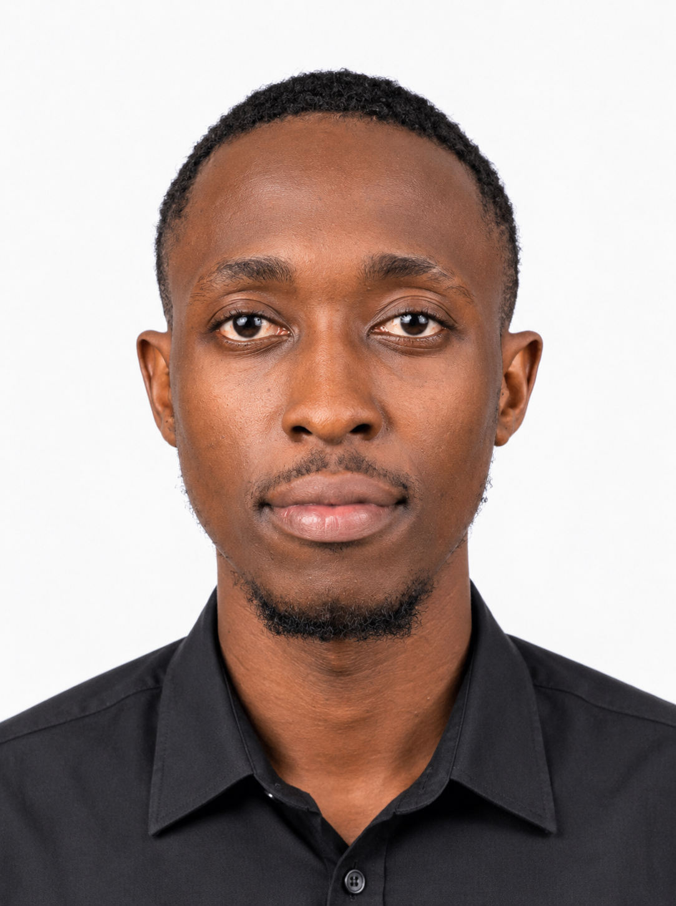

Marketing digital
Réseaux sociaux, visibilité, contenu, acquisition et communication de marque.
Je suis Kenfack Tiofack Job, créateur digital entre marketing, code et design. J'imagine des projets utiles, modernes et pensés pour marquer les esprits — de la stratégie à la réalisation.

Étudiant en MSc1 Marketing Digital & E-commerce à l'INSEEC Paris, récemment diplômé d'une Licence Professionnelle en Génie Logiciel à l'IUT de Douala. J'ai construit un parcours polyvalent : développement web front-end, WordPress, stratégie marketing et création visuelle.
Savoir Utiliser les outils du digital est Super Mais comprendre aussi pourquoi ils fonctionnent — et comment les utiliser pour créer de la valeur Et De L'impact est Ma Plus Grande Passion.
Mon objectif : combiner créativité, technique et sens business pour concevoir des expériences digitales cohérentes, utiles et mémorables.
Je combine créativité, technique et sens business pour construire des solutions digitales cohérentes — de la stratégie à la réalisation.
Réseaux sociaux, visibilité, contenu, acquisition et communication de marque.
Interfaces responsives, intégration front-end Et back-end.
Flyers, affiches, logos et contenus visuels pensés pour attirer l'attention.
Mise en place, personnalisation et accompagnement de projets web.
Vision d'un système d'automatisation complet des PME au Cameroun, puis dans toute l'Afrique
Vision De lancement d'un programme d'ambassadeur A long Terme.
Présentation complète d'une boutique cosmétique moderne — direction artistique et visuels.
Conception d'un site Web pour une entreprise de transformation digitale En Afrique.
Développement d'un Site web immersive pour un artiste musical.
Site vitrine événementiel élégant, personnalisé et entièrement responsive.
Approfondissement du marketing digital, de l'e-commerce et des stratégies de communication.
Expérience commerciale et développement web au contact de problématiques réelles.
Voir le diplômeDéveloppement et évolution des techniques digitales modernes en entreprise.
Voir le diplômeFormation technique en informatique, développement et conception logicielle.
Voir le diplômeFormation approfondie en littérature et sciences humaines.
Voir le diplômeCe que vous parcourez ici, c'est le fruit d'un parcours, d'un travail et d'une ambition. Mes compétences et mes expériences parlent d'elles-mêmes — mais elles prennent tout leur sens lorsqu'elles rencontrent un terrain pour s'exprimer. Je suis convaincu qu'une entreprise qui déciderait de m'accorder une place, même modeste, ne le regretterait jamais. Non pas par prétention, mais parce que j'ai la ferme conviction que la valeur d'une collaboration se construit dans l'engagement et les résultats.